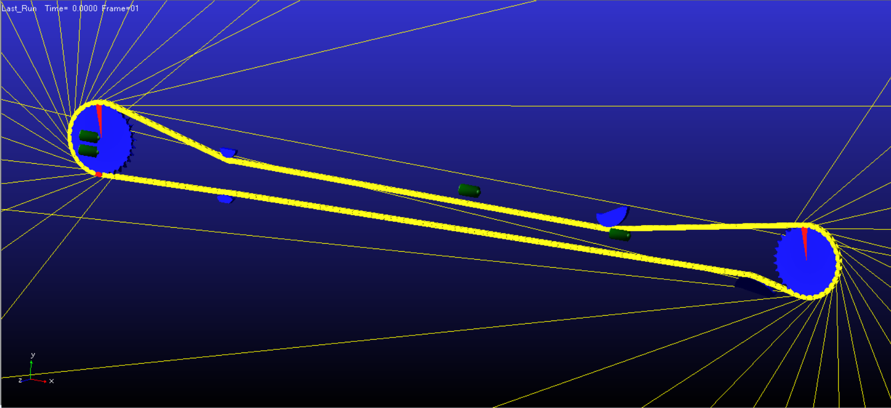
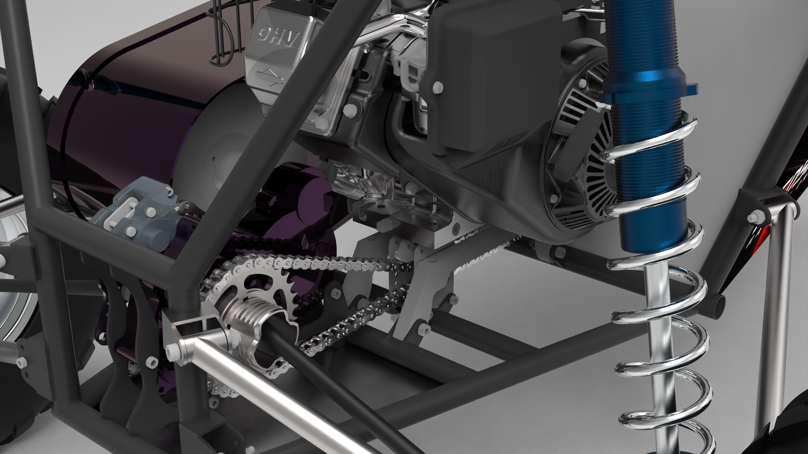
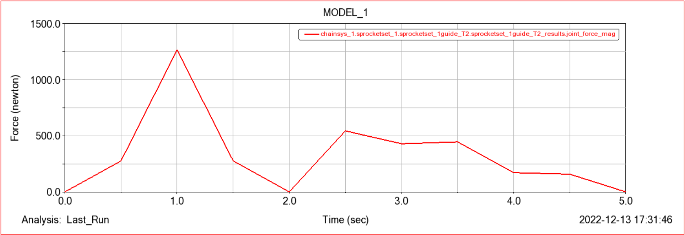

ATV chain-drive system
Developed a chain-drive system to replace the previous prop-shaft arrangement, reducing weight and assembly time.
Built system

Brief
The previous prop-shaft system provided the baseline for a lighter, more serviceable drivetrain arrangement.
My work
Co-led transmission development with another team lead. Developed the chain-drive layout and personally built the ADAMS chain-sprocket model.
- Compared the chain-drive arrangement with the previous prop-shaft system.
- Built an ADAMS model to study chain, sprocket, and tensioner loading.
- Combined structural checks with assembly-focused design to reduce weight and assembly effort.
Engineering detail
Chain and tensioner loading
I built the ADAMS chain-sprocket model shown here. The RedShift transmission report uses its simulated tensioner force history to support structural checks of the tensioner assembly.
Sprocket selection
Explored smaller sprockets and topology optimization for weight reduction. Low tooth counts made chordal effects, speed fluctuation, torque ripple, and vibration part of the design trade-off alongside strength and mass.
Shared transmission development
I co-led the transmission work with another team lead. The rear drivetrain CAD image shows the chain drive in the wider team assembly; it provides packaging context. The 25% system-weight and 50% assembly-time improvements compare the chain drive with the earlier prop-shaft arrangement.

Result
The chain-drive system was 25% lighter and took 50% less time to assemble than the previous prop-shaft system.